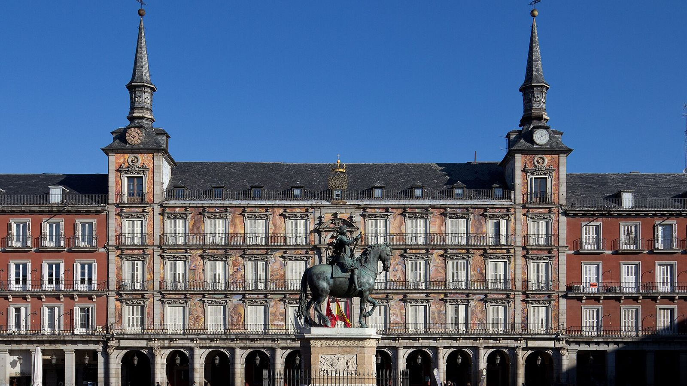

Un mercado fuera de la muralla
Antes de ser plaza fue la Plaza del Arrabal, un mercado muy concurrido donde se cruzaban los caminos de Toledo y Atocha, justo fuera de la villa medieval.
Terminada en 1619 sobre un antiguo mercado fuera de las murallas, la Plaza Mayor ha visto mercados, corridas de toros, ceremonias reales y tres grandes incendios. Lo que ves hoy es, sobre todo, la reconstrucción de Juan de Villanueva tras 1790.
Actualizado

Mucho antes de ser plaza, aquí estaba la Plaza del Arrabal, el mercado más concurrido de Madrid, justo fuera de la muralla medieval. Felipe II encargó a Juan de Herrera rediseñarla, pero las obras solo empezaron con Felipe III, de la mano de Juan Gómez de Mora, y la plaza se terminó en 1619.
Se quemó tres veces, en 1631, 1670 y 1790. El último incendio destruyó cerca de un tercio, y Juan de Villanueva la reconstruyó con casas más bajas, de tres plantas, esquinas cerradas y los grandes arcos por los que hoy se entra. La obra no se terminó hasta 1854.
La plaza ha cambiado de nombre con la historia de España: Plaza de la Constitución desde 1812, Plaza Real, Plaza de la República en 1873, y Plaza Mayor desde el final de la Guerra Civil. Ha visto corridas de toros, ceremonias reales y, en 1680, un gran auto de fe de la Inquisición.
Antes de ser plaza fue la Plaza del Arrabal, un mercado muy concurrido donde se cruzaban los caminos de Toledo y Atocha, justo fuera de la villa medieval.
La plaza ardió tres veces. Tras el peor, en 1790, Juan de Villanueva bajó los edificios de cinco a tres plantas y abrió los grandes arcos de las esquinas.
La Casa de la Panadería fue el primer edificio de la nueva plaza, empezado en 1590. Sus murales de figuras mitológicas los pintó Carlos Franco en 1992.
Se terminó en 1619, aunque buena parte de lo que se ve es la reconstrucción tras el incendio de 1790.
Del rey Felipe III a caballo, hecha en 1616 por Giambologna y Pietro Tacca. Se colocó en la plaza en 1848.
Mercados, corridas de toros, proclamaciones reales, fiestas y ceremonias públicas, durante cuatro siglos.
Juan Gómez de Mora la terminó en 1619. Su aspecto actual es la reconstrucción de Juan de Villanueva tras el incendio de 1790.
Diez, a través de nueve arcos, entre ellos el Arco de Cuchilleros, el Arco de Toledo y el de Ciudad Rodrigo.
Palacio de Cristal · Plaza de Cibeles · Prado Museum · Puerta de Alcalá · Royal Palace of Madrid · Templo de Debod
Audioguía de MadridTodos los lugares de Madrid, con la historia que la app te cuenta allí.